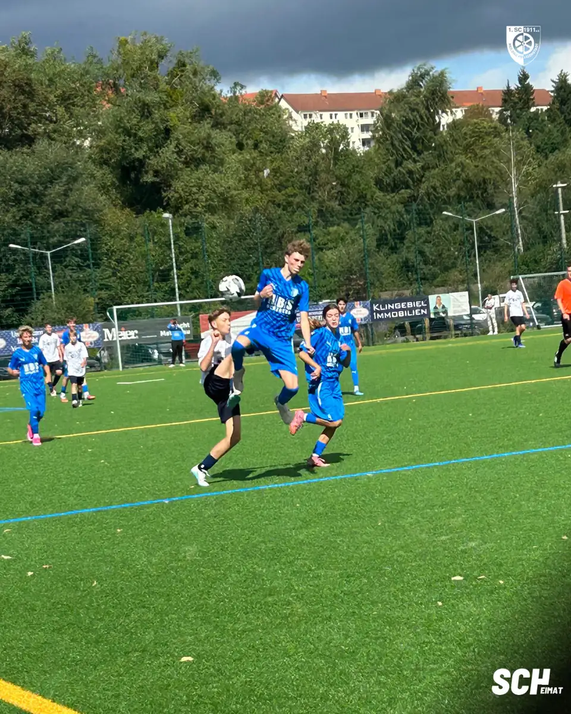
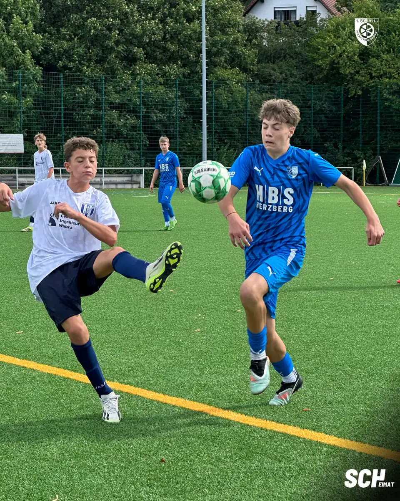
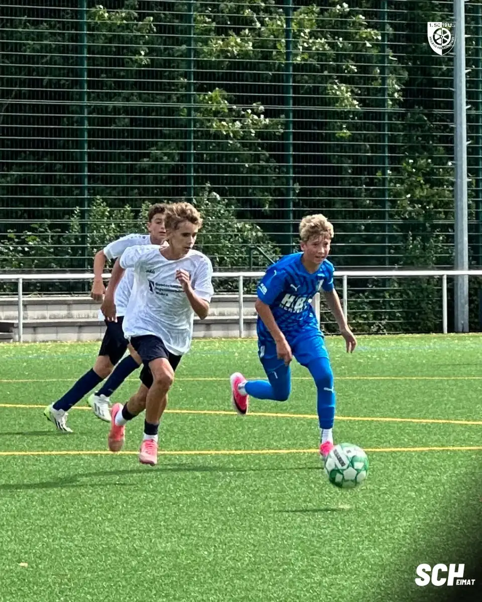
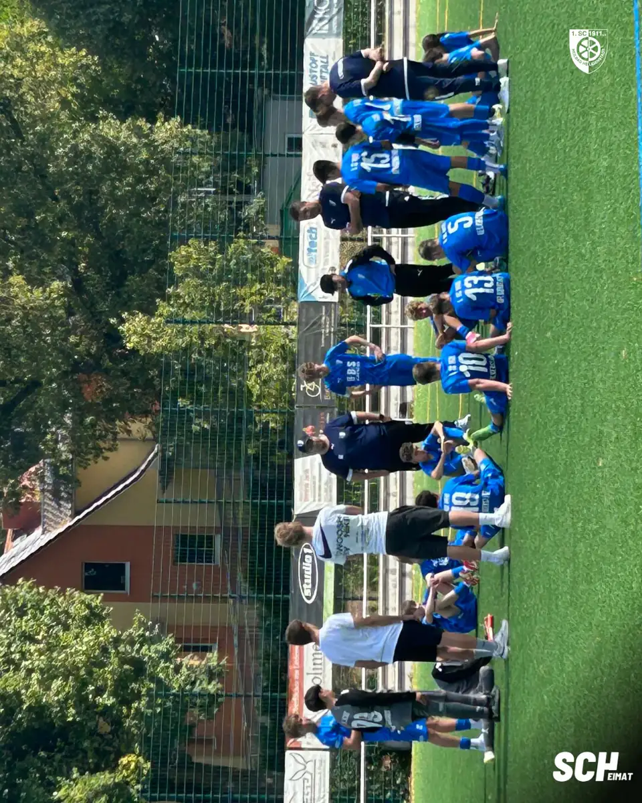

Geduldig geblieben, hinten nichts zugelassen: U15 gewinnt mit 2:0
Unsere U15 hat ihr Heimspiel gegen die SG SV Wacker 04 Bad Salzungen mit 2:0 (2:0) gewonnen. In einer zunächst zähen Partie brauchte die Mannschaft von Trainer Alexander Eschborn etwas Geduld, ehe Maximilian Ludemann in der 19. Minute den Bann brach. Diego Mariscal Cortina legte zehn Minuten später nach. Nach der Pause ließ eine konzentrierte SCH-Defensive kaum etwas anbrennen und brachte den Vorsprung sicher über die Zeit.
Viel Mittelfeld, wenig Raum
Die ersten Minuten zeigten schnell, dass dieser Sonntagvormittag kein Selbstläufer werden würde. Beide Mannschaften neutralisierten sich zunächst weitgehend. Vieles spielte sich zwischen den Strafräumen ab, klare Möglichkeiten blieben Mangelware. Für unsere U15 bedeutete das: ruhig bleiben, weiterarbeiten und nicht ungeduldig werden. Bad Salzungen hielt dagegen und ließ zunächst wenig zu. Der SCH musste sich seine Räume erarbeiten.
Nach 19 Minuten gelang schließlich der Durchbruch. Maximilian Ludemann traf zum 1:0 und gab der Partie damit eine neue Richtung. Nach einer Phase, in der sich beide Mannschaften lange gegenseitig beschäftigt hatten, war der erste Treffer gefallen.
Mariscal Cortina legt vor der Pause nach
Mit der Führung im Rücken bekam der SCH zunehmend Zugriff auf die Partie. Entscheidend war dabei, dass die Mannschaft nicht sofort auf den zweiten Treffer drängte und dadurch ihre Ordnung verlor. Stattdessen blieb sie geduldig.
In der 29. Minute folgte die Belohnung. Diego Mariscal Cortina erzielte das 2:0 und sorgte damit noch vor dem Seitenwechsel für eine deutlich angenehmere Ausgangslage. Bei diesem Spielstand blieb es bis zur Pause.
Aus einer anfangs ausgeglichenen und chancenarmen Partie hatten die Blau-Weißen innerhalb von zehn Minuten eine Zwei-Tore-Führung gemacht. Nicht mit einem dauerhaften Offensivfeuerwerk, sondern mit Geduld und der nötigen Konsequenz in den entscheidenden Situationen.
Kossakowski und die Defensive stehen sicher
Nach dem Seitenwechsel änderte sich die Ausgangslage. Der SCH musste nicht mehr zwingend auf den nächsten Treffer gehen. Stattdessen kam es darauf an, die eigene Führung sauber zu verteidigen und Bad Salzungen keinen Weg zurück ins Spiel anzubieten. Das gelang. Die Defensive um Rückkehrer Maksymilian Kossakowski zeigte eine konzentrierte Leistung. Bad Salzungen kam kaum gefährlich vor das SCH-Tor und fand nur selten Lücken. Gerade bei einem 2:0 ist das nicht selbstverständlich. Ein Anschlusstreffer hätte die Partie sofort wieder geöffnet. Genau diesen Moment ließ unsere Mannschaft nicht zu. Trainer Alexander Eschborn nutzte im zweiten Durchgang zudem seine Wechselmöglichkeiten. Arne Merker kam unmittelbar nach der Pause für Konrad Meitzner in die Partie. In der 48. Minute ersetzte Leonard Wagner Theo Nolte, drei Minuten später kam Aurel Müller für Julian Griethe. Auch mit den Veränderungen blieb die Ordnung erhalten.
Sechs Punkte und nur ein Gegentor
Auch der Blick auf den Saisonstart fällt erfreulich aus. Für unsere U15 war es bereits der zweite Sieg. Mit sechs Punkten und einem Torverhältnis von 6:1 steht der SCH nach den ersten beiden Partien auf Rang vier der Verbandsliga.
Nicht jeder Sieg braucht viele Tore oder große Spektakel. Manchmal reichen zwei gute Momente vorne und eine Mannschaft, die hinten über die gesamte Spielzeit konzentriert bleibt. Genau das hat unsere U15 an diesem Sonntagvormittag geschafft.
Spieldaten
SC Heiligenstadt U15 – SG SV Wacker 04 Bad Salzungen 2:0 (2:0)
SC Heiligenstadt: Erbendruth – Hildebrandt – Kossakowski – Nolte (51. Wagner) – Ludemann – Preis – Watterott – Griethe (53. Müller) – Strecker – Mariscal – Meitzner (45.Merker)
SG SV Wacker 04 Bad Salzungen
Jaha – Ullrich – Pempel – Rommel – Weiprecht (36. Druselmann) – Gräf – Lindemann – Helbig – Herbarth – Cramer – Hosni
Schiedsrichter
Ertmer
Tore:
1:0 Ludemann (19.), 2:0 Mariscal Cortina (29.)



